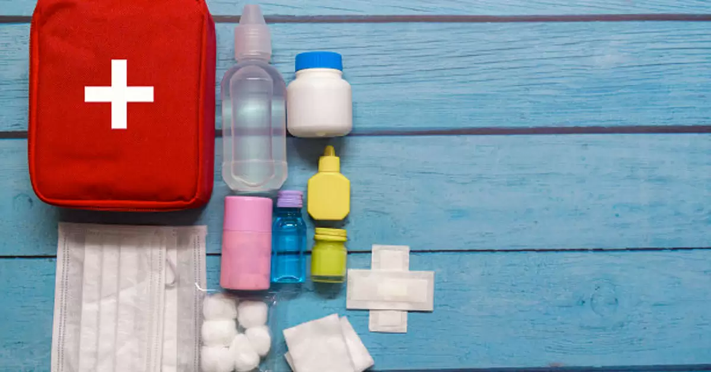
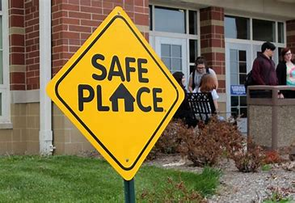

Table of Contents
- Prepared:Bag with most important
- Preparation involves checking how things are at homr
- Identifies the safe places in case of natural disasters
- In the middle of a natural disaster,What to do?
- The Event is over...It's important to work on this
Most Common natural disasters
- Floods
- Earthquakes
- Cyclones
- Natural fires
- Frosts in winter
- Volcanoes
- LandSlides
Be prepared: Bag with the most important

In view of the various changes that have occurred on the Earth today, it is necessary to be prepared for any probability of natural disaster that may occur
One of the basic recommendations to face a natural disaster is to prepare for that event.
The ideal is to have a bag that contains a series of implements that will allow you to get out of the way after the disaster has happened.
Among the elements that should be part of your bag or equipment supplies we have:
- First aid kit.
- Emergency and family phone numbers
- Bottles with purified water in unbreakable containers.
- Non-perishable and low weight food.
- Special food and medicine for the sick.
- Decapper, can opener and knife.
- Flashlight with spare batteries.
- Candles and matches.
- Battery-powered radio.
- Spare batteries.
- Set of clothes stored in a sealed bag.
- Thin, lightweight blanket.
- Personal and household documents packed in a plastic bag.
Identifies the safe places in case of natural disaster

Another important aspect to consider, before a natural disaster occurs, is to identify the spaces in your home that offer the most protection and allow you to take shelter with your family.
Identifying the safety of each space is essential:
- Know the safest places in your home in case of an earthquake.
- Identify the clear areas of your home, if there is no safe area.
- Set up the smallest room in your house.
- Check the unsafe spaces in your home for objects that could fall and hurt you.
- Check that the drains in your house are in excellent condition